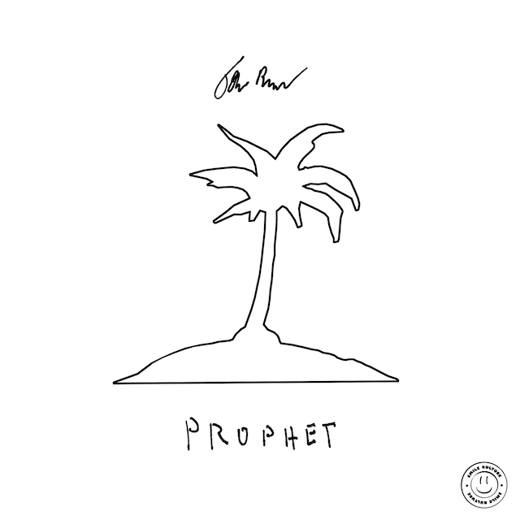
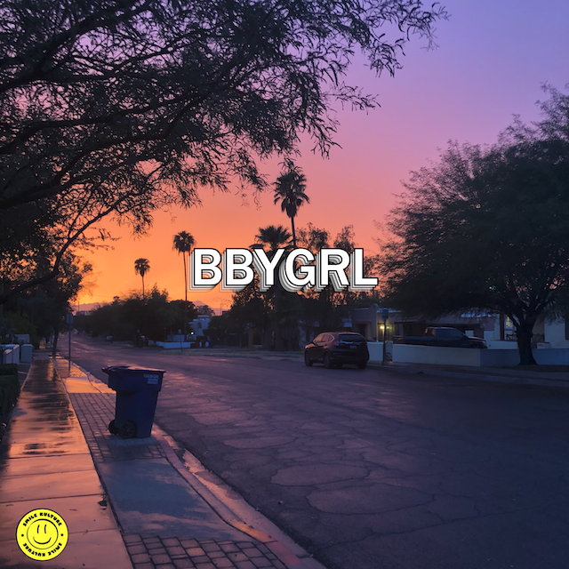
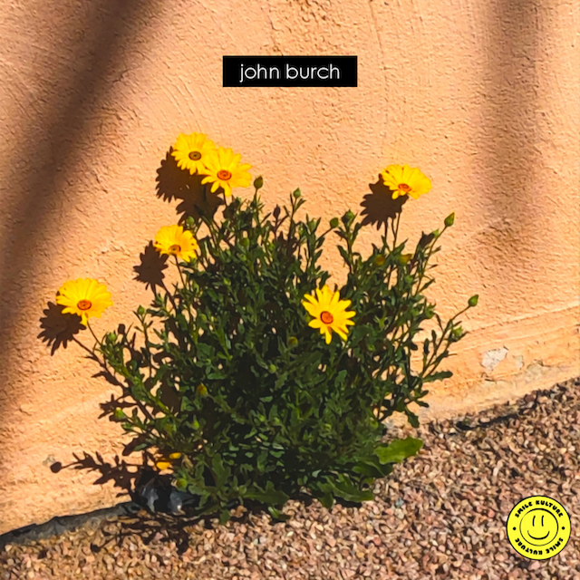

John Burch
Pianist, Composer, & Producer
Music - Singles & Albums
Spotify:

Prophet (2020) - Inspired by the music of Nujabes, Prophet is a lo-fi hip-hop instrumental album that tells the story of a man deserted on an island.
Spotify:

BBYGRL (2023) - While BBYGRL (pronounced as "baby girl") started off as a silly voice memo, it became an earworm that just had to be fully produced into a single. This one features Ericka, my fiancée, on the background vocals.
Spotify:

Friday (2022) - A dedication to my cats, Luna and Moira. Friday blends boom-bap hip-hop drums, retro chiptune sounds, jazz, and classical into one short-but-sweet album.